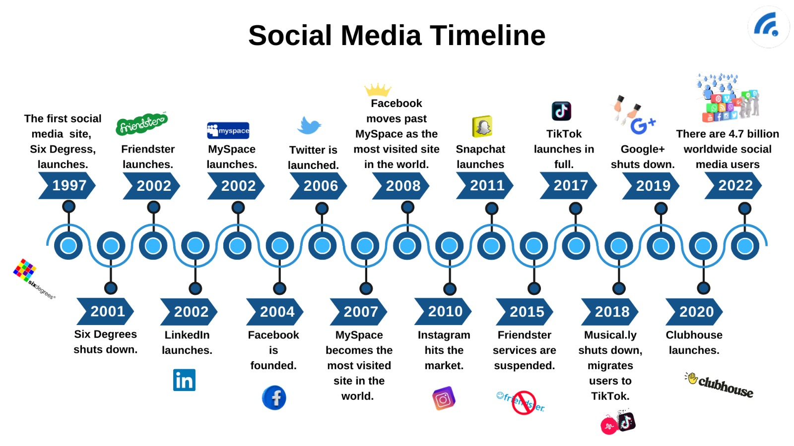

<style>
    body{background-color: black;}
    h4{
        color: #fffefe;
     font-family: serif, 'Times New Roman', Times, serif;
     font-size: 20px;
    }
    h5{
        color: #fffefe;
     font-family: serif, 'Times New Roman', Times, serif;
     font-size: 30px;
    }
</style>

<section>

   
    <h5>2. Social Media Backstory and Usage</h5>
    <h5>2.1. What is social media?</h5>
    <article>
      <h4>According to Caleb & Rebecca (2014), social media are internet-based platforms that facilitate perceptions of communication among users, originating from user-generated types of content.</h4>
    </article>
    <h5>2.2. History of social media</h5>
    <article>
      
      <h4>Digital communication originated in 1844. It was technically the first appearance of social media. The first electronic message was sent from Baltimore to Washington D.C. by Samuel Morse, an American inventor.</h4>
    <br>
    <br>
      <h4>However, most of the modern social media we currently understand were influenced by the creation of the internet in 1969. The Advanced Research Projects Agency Network (ARPANET) of the USA was responsible for the outcomes of social media in the present day.</h4>
    <br>
    <br>
      <h4>Blogs were prevalent in the 1990s era of the internet. Since there are no third-party applications, users posted their content freely and received comments from others. This has led to the creation of social media.</h4>
    <br>
    <br>
      <h4>Social media truly started in 1997. The first appearance of a website named Six Degrees has made creating social media possible. It allowed users to use customized profiles and to communicate with other users.</h4>
    <br>
    <br>
      <h4>Many other platforms also emerged from the trend of people getting engaged in social media content. TikTok - a social media platform launched in 2016, became a viral sensation, especially for younger generations. </h4>
    </article>

  </section>
